Cosmology and Extragalactic Astronomy#
Describe three lines of evidence for the hot Big Bang model. In the current model, how old is the universe?
I) Olber’s Paradox: If the universe were infinite both in size and age, why isnt the whole sky bright with starlight? The answer is that the universe needs a finite age! The age of the universe is \(\sim 13.8 \; \rm Gyr\). If the universe has a finite age, then how did it start?
II) Distance Ladder Measurements: from Hubble suggested that the universe is expanding with an expansion rate \(H_0\). If the universe is expanding today, and has a finite age then we would expect the universe to be smaller in its earlier years. Eventually one would expect the universe to be some infinitesimal point at \(t \sim 0\).
III) Cosmic Microwave Background: Afterglow of the Big Bang was measured in the CMB with \(T_{\rm cmb} \sim 2.73 \; \rm K\) today. The fact that it is homogeneous and isotropic suggests that the universe was in a hot dense equilibrium up to the moment of last scattering (recombination) \(z \sim 1100\).
IV) Cosmic Abundances: broadly agree with Big Bang Nucleosynthesis predictions for H, He (lithium is a bit off) (H:He \(\simeq\) 3:1)
What is H0 and how is it measured? What is Ωm and how is it measured? What are the other key cosmological parameters in the Standard Cosmological Model?
The Hubble Constant \(H_0 \sim 68 - 72 \; \rm km/s/Mpc\) is the expansion rate of the Universe at present day in km/s/Mpc. It can be measured by the following probes
I) Standard Candles: We use Type Ia SNe at the end of the cosmic distance ladder (geometric -> Cepheids/TRGB -> Type Ia Sne). A standard candle is any object where we can infer or know their intrinsic luminosity so that when we measure a brightness, by inverse square law we get a distance! This is like when you’re driving/walking at night and see headlights in the distance, you have a mental standard of how bright a headlight is so you can infer how far away the car must be based on how bright the lights are in your field of view. By having an accurate distance, one can measure the spectrum of these standard candles to infer their recessional velocity which can be plotted against distance to get an expansion rate.
II) Standard Rulers: The Baryon Acoustic Oscillation feature in the CMB or in spectroscopic galaxy surveys. By having a standard ruler which can be measured at multiple distant redshifts one can then infer \(H(z)\) and thus get \(H_0\). This is a direct measurement and is thought to have less systematics than the cosmic distance ladder. One can also use strong lensing time delays to infer \(H_0\) (Prof. Brenda Frye’s Work)
III) Standard Sirens: Gravitational waves from binary neutron star mergers and binary black hole mergers can potentially have standardized waveforms which can be used to measure \(H_0\) although we are sample limited at the moment.
The current matter density fraction \(\Omega_{\rm m,0}\approx 0.3\) in the universe’s mass-energy budget. This can be measured by
I) CMB Anisotropies: we fit the temperature power spectrum \(C_{\ell \ell}\). The peaks of the CMB temperature power spectrum encode information about \(\Omega_{m}\). II) Galaxy Clustering: Galaxies are biased tracers of dark matter, if you map the positions of galaxies then you effectively map dark matter and thus this can be used to estimate \(\Omega_{m}\). III) Weak Lensing: 3x2 pt analyses (cross correlating galaxy positions with tangential shears) probe the \(S_8 = \sigma_8 \sqrt{\Omega_{\rm m} / 0.3}\) parameter.
Important parameters of ΛCDM are:
\(w = -1\) : EOS parameter for Dark Energy (aka Λ-constant with negative pressure)
\(\tau \approx 0.06\) : Optical depth to the CMB at the Epoch of Reionization
\(\Omega_{\rm m,0} \approx 0.3\) : current matter density fraction of the universe
\(\Omega_{\rm b,0} \approx 0.04\) : current baryon density fraction of the universe.
\(\Omega_{\Lambda,0} \approx 0.7\) : current dark energy density fraction of the universe.
\(H_0 \approx 70 \; \rm km/s/Mpc\) : Hubble constant, current expansion rate of the universe.
\(\sigma_8 \approx 0.8\) : RMS of density fluctuations in spheres of radius \(8 \; \rm Mpc\).
\(n_s \approx 0. 96\) : primordial spectral index
Technically this is not the most fundamental set of parameters and a lot of these are derived or computed from directly measured parameters, but this encapsulates the major ideas of the ΛCDM cosmological model. A useful summary of the ΛCDM model with more detail can be found here. Some extensions to this simple model are massive neutrinos \(\sum m_\nu \approx 0.06 \; \mathrm{ eV}/c^2\), the tensor-to-scalar ratio \(r \lesssim 0.06\), and the number of effective relativistic degrees of freedom \(N_{\rm eff} \approx 3\). Another note, one might see \(A_s\) which is the amplitude of primordial curvature perturbations, which has the same role of \(\sigma_8\) in setting the amplitude of the power spectrum.
What are the Friedmann equations? Based on these equations, what is a(t) if the universe is (i) radiation dominated, (ii) matter dominated, (iii) cosmological-constant dominated?
These are some of the most fundamental equations in all of cosmology. If we assume a FRLW metric
\[ds^2 = c^2 dt^2 - R^2 a(t)^2 [ \chi^2 + S^2_k(\chi) d\omega^2]\]where \(a(t) = R/R_0 = (1 + z)^{-1}\) is the scale factor and \(S_k(\chi)\) is either equal to \(\chi\) (comoving distance) in a flat universe (\(k = 0\)), \(\sin(\chi)\) in a positively curved universe (\(k = +1\)), or \(\sinh(\chi)\) in a negatively curved universe (\(k = -1\)), and we combine the FRLW metric with Einstein’s theory of General Relativity
\[\underbrace{R_{\mu \nu} - \frac{1}{2} g_{\mu \nu} R}_{\rm how \; spacetime \; moves} + \underbrace{\Lambda g_{\mu \nu}}_{\rm property \; of \; space} = \underbrace{\frac{8 \pi G}{c^4} T_{\mu \nu}}_{\rm energy \; density \; of \; universe}\]then we get the first Friedmann Equation. I prefer to write it in its’ most useful form
\[\frac{H^2}{H_0^2} = \sum_s \Omega_{s,0} a^{-3(1 + w_s)} \; .\]With this equation we can easily describe the evolution of the universe. The equation of state parameters \(w_s\) are
Matter (CDM & Baryons): \(w_s = 0\) so \(\Omega_{\rm m} = \Omega_{\rm m,0} a^{-3}\)
Radiation (photons & neutrinos): \(w_s = 1/3\) so \(\Omega_{\gamma} = \Omega_{\rm \gamma,0} a^{-4}\). The additional factor of \(a^{-1}\) comes from the photons losing energy as they travel through space.
Dark Energy (Λ): \(w_s = -1\) so \(\Omega_{\Lambda} = \Omega_{\Lambda,0}\).
Curvature: It doesn’t make sense to give this term an EOS parameter, we just include it as a term to match the same form as the other terms for elegance. This term dilutes as \(\Omega_k = \Omega_{\rm k,0} a^{-2}\).
You might be more familiar with the first Friedmann equation in the form
\[\left(\frac{\dot{a}}{a} \right)^2 = \underbrace{\frac{8 \pi G \rho}{3}}_{\rm Matter \; \& \; Radiation} - \underbrace{\frac{k c^2}{a^2}}_{\rm Curvature} + \underbrace{\frac{\Lambda c^2}{3}}_{\rm Dark \; Energy}\]which can be transformed to how we wrote it previously using a couple definitions: \(H(t) = \dot{a} / a\) and \(\Omega_{\rm s} \equiv \rho_s / \rho_c\) where \(\rho_c \equiv 3 H^2 / 8 \pi G\). We define \(\Omega_{k, 0} = k c^2 / H_0^2\).
The second Friedmann equation is less useful but can be derived by differentiating the above equation with respect to time. The first Friedmann equation looks at the first time derivative of the scale factor and the second Friedmann equation looks at the acceleration of the scale factor
\[\frac{\ddot{a}}{a} = \frac{\Lambda c^2}{3} - \frac{4 \pi G}{3} \left(\rho + \frac{3P}{c^2} \right) \; .\]We can use the first Friedmann equation to see how the universe behaves in each era of domination. In full we have
\[\frac{H^2}{H_0^2} = \Omega_{\rm m,0} a^{-3} + \Omega_{\rm \gamma, 0} a^{-4} + \Omega_{\Lambda,0} + \Omega_{k,0}a^{-2}\;,\]but we can assume the universe is flat so that \(\Omega_{\rm k,0} = 0\). If the universe is radiation dominated (which is how the universe starts off), then we ignore all the other terms so that
\[\frac{H^2}{H_0^2} \approx \Omega_{\gamma, 0} a^{-4} \;\;\;\; \longrightarrow \;\;\;\; \int a \; da \approx H_0 \sqrt{\Omega_{\gamma,0}} \int dt \;\;\;\; \longrightarrow \;\;\; \; a(t) \propto t^{1/2} \; .\]We can play the same game for a matter dominated universe
\[\frac{H^2}{H_0^2} \approx \Omega_{\rm m, 0} a^{-3} \;\;\;\; \longrightarrow \;\;\;\; \int a^{1/2} \; da \approx H_0 \sqrt{\Omega_{\rm m,0}} \int dt \;\;\;\; \longrightarrow \;\;\; \; a(t) \propto t^{2/3} \; .\]Lastly, we can do a dark energy dominated universe
\[\frac{H^2}{H_0^2} \approx \Omega_{\Lambda, 0} \;\;\;\; \longrightarrow \;\;\;\; \int \frac{da}{a} \approx H_0 \sqrt{\Omega_{\Lambda,0}} \int dt \;\;\;\; \longrightarrow \;\;\; \; a(t) \propto e^t \; .\]Solutions with multiple components starts to get a bit more challenging to integrate by hand, typically cosmology codes do this integral numerically with all the terms.
What is the temperature of the cosmic microwave background (CMB) and how is it measured? What does the measurement imply about the redshift of recombination, the redshift of big-bang nucleosynthesis, and (possibly) the redshift of the inflationary epoch?
The present day temperature of the CMB is \(T_{\rm CMB,0} \approx 2.73 \; \rm K\), it is measured in the microwave. This number comes from fitting a blackbody of \(T = T_{\rm CMB,0}\) to the CMB and it fits beautifully! Deviations from a perfect blackbody are tiny, of order \(\delta T / T \sim 10^{-5}\)!
We measure the CMB with \(T_{\rm CMB,0} \approx 2.73 \; \rm K\) today, but we think the CMB represents the last light from when the universe was opaque to photons. The CMB we observe comes from photons that escaped when the universe became transparent to photons (aka when the universe was cool enough to allow recombination of hydrogen). We can use this physical knowledge to measure the redshift of recombination \(z_{\rm rec}\)!
The temperature of the CMB as a function of redshift is \(T_{\rm CMB} = T_{\rm CMB,0} (1 + z)\) or \(\propto a^{-1}\). This scaling is because \(n_{\gamma} \propto T^4\) (for any blackbody) and \(\Omega_\gamma \propto a^{-4}\) which gives us \(T_{\gamma} \propto a^{-1}\).
The energy to ionize hydrogen \(E_{\rm ionize, H} = 13.6 \; \rm eV\), but this would naively give a thermal temperature \(E_{\rm ionize,H} = kT \;\;\; \longrightarrow \;\;\; T \sim 150,000 \; \rm K\) which would give a HUGE \(z_{\rm rec}\), instead we need the Saha Equation
\[\frac{n_{\rm H}}{n_{\rm p} n_{\rm e}} = \left(\frac{2 \pi m_e kT}{h^2} \right)^{-3/2} e^{\Delta E/kT} \;\;\;\;\;\; \& \;\;\;\;\;\; \Delta E = (m_{\rm H} - m_{\rm p} - m_{\rm e})c^2 = 13.6 \; \rm eV \; .\]If we then plot the ionization fraction as a function of temperature we get
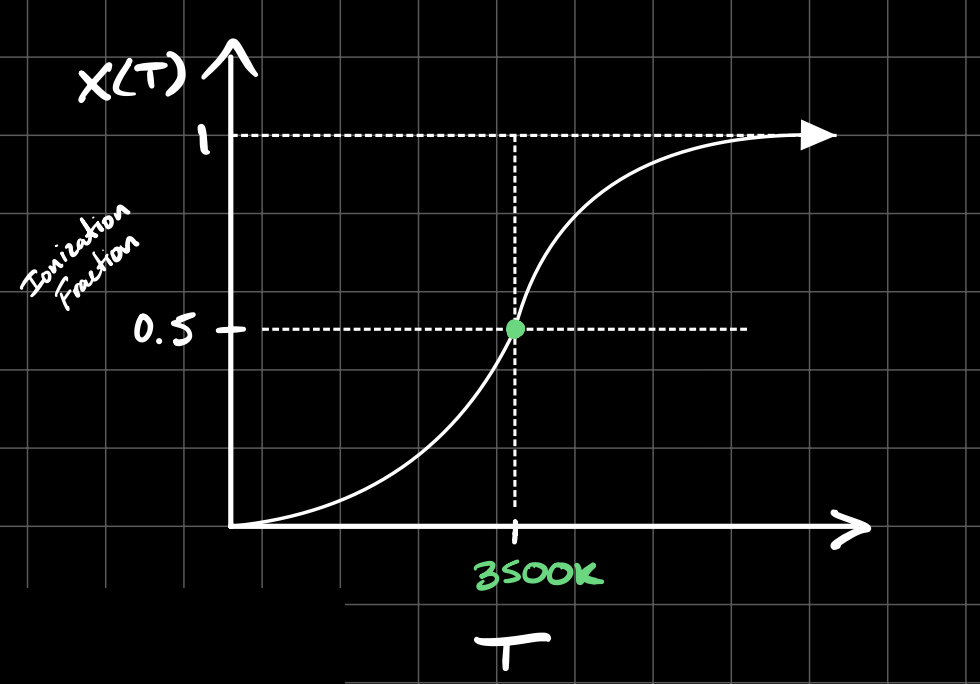
and we say that once half of all the Hydrogen has recombined, that roughly corresponds to our \(T_{\rm CMB}\) at \(z_{\rm rec}\). Plugging in the numbers we get that \(z_{\rm rec} \approx 1100\)! This corresponds to when the universe was \(\sim 380,000 \; \rm yrs\) old.
Once we have this redshift as an anchor point, then we know a lot about the history of the universe before that. With our measurements of \(\Omega_{\rm m}\) and \(\Omega_{\gamma}\) from the CMB, we can infer the matter-radiation equality redshift by \(\Omega_{\rm m,0}a^{-3} = \Omega_{\gamma,0} a^{-4} \;\;\; \rightarrow \;\;\; a = \Omega_{\gamma,0} / \Omega_{\rm m,0}\) which gives \(z_{\rm eq, \gamma-m} \approx 3600\). With this redshift we have an anchor temperature and time for the radiation dominated era. Everything before this moment in time corresponds to the radiation dominated era which means we know the temperature of the universe as a function of time
\[T_{\rm universe} \sim 10^{10} \; \mathrm{K} \; \left(\frac{t}{1 \; \rm sec} \right)^{1/2} \; .\]If we use fundamental physics (i.e. Boltzmann Equation & Saha Equation) to compute characteristic temperatures required to achieve certain reactions, then we have a pretty good grasp of what time corresponds to what reactions were going on in the universe’s history. A rough timeline is presented below
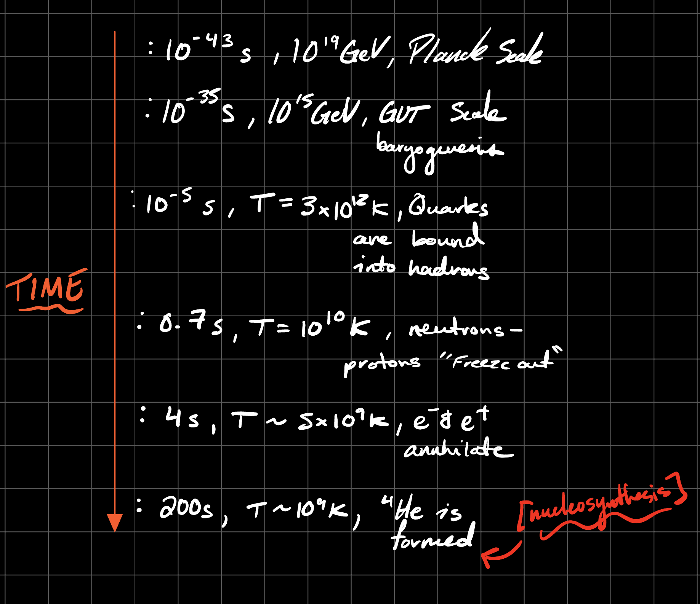
From here we can see that Big Bang Nucleosynthesis ends about \(\sim 3 \; \rm mins\) after the Big Bang.
It’s important to know how BBN works. We know that the proton-to-neutron ratio was 7:1, which means there were more protons than neutrons. Since the half-life of a free neutron is \(\sim 15 \; \rm mins\) we expect r-process formation of H, D, He, and Li since the universe is not old enough to have neutron decay. The reaction chain for He to form is
\[\rm p + n \rightarrow D +\gamma \;\;\;\; \longrightarrow \;\;\;\; D + D \rightarrow n + ^3 He \;\;\; \longrightarrow \;\;\;\; D + ^3 He \rightarrow p + ^4 He \; .\]If there are more neutrons available then we expect more of the Deuterium to be used up to form He. This is how measuring deuterium abundance in the local universe can help us constrain \(\Omega_{\rm b}\). If \(\Omega_{\rm b} \uparrow\) then more neutrons available in BBN means that \(D \downarrow\). Deuterium is not created outside of BBN in anyway that is relevant for cosmic abundances.
Lastly, we can infer the timescale of inflation roughly by using fundamental constants. The Schwartzchild radius represents GR \(R_{\rm sch} = 2 GM / c^2\), and the debroglie wavelength represents QM \(\lambda_B = \hbar / mc\), if we combine by saying \(R_{\rm sch} \sim \lambda_B\) then we get the Planck mass \(M_{\rm planck}\). If we then plug that into the Schwartzchild radius equation we get the planck radius \(R_{\rm planck}\), and from this we can compute the Planck time \(t_{\rm planck} \sim R_{\rm planck}/c \sim 10^{-44} \; \rm s\). This is approximately when we expect inflation to occur.
Describe the most important cosmological distance measures, how they depend on redshift, and how they are relevant to observations.
The comoving distance \(\chi\) is defined such that it doesn’t change with scale factor
\[R_0 \chi = c \int_{t_1}^{t_0} \frac{dt}{a(t)} = c \int_{a(t)}^1 \frac{da}{a^2 H(a)} = c \int_{0}^z \frac{dz}{H(z)} \;\;\;\;\;\;\;\;\;\;\;\;\;\;\; R_0 \equiv \frac{c}{H_0} \; .\]The luminosity distance is then
\[d_L \equiv R_0 S_k(\chi) (1 + z)\]and the angular diameter distance is then
\[d_A \equiv R_0 S_k(\chi) (1 + z)^{-1} \; .\]An easy way to remember if the \((1 + z)\) factor is on the top or the bottom is to remember that angular size has a turnover with redshift! The luminosity distance and the angular diameter distance are related by a factor of \((1 + z)^2\).
The luminosity distance is measured whenever we measure the distance via flux. For example, the brightness of Type Ia SNe. Angular diameter distance is measured whenever we measure distance via angular separation on the sky. Often used for projected quantity measurements or in gravitational lensing. A great example of a quantity that combines both of these quantities is surface brightness which is \(\rm SB \sim F / (\Delta \theta)^2\). In this case, by inverse square law the flux is \(F = L / 4 \pi d_L^2\), and the angular size scales with angular diameter distance as \(\theta \sim r / d_A\). When we combine both of these we see that the surface brightness of an image scales with redshift as \(\mathrm{SB} \propto (1 + z)^{-4}\) (yikes!).
Describe at least three lines of evidence that most of the mass in the universe is in the form of non-baryonic dark matter. What are the leading candidates for the nature of dark matter?
I) Virial Theorem of Galaxy Clusters: X-ray clusters suggested that the mass of the clusters needed to be much higher than visible light could account for (Fritz Zwicky).
II) Rotation Curves of Disk Galaxies: through 21-cm observations, we see flat rotation curves in spiral galaxies which suggest that the mass enclosed is larger than can be accounted for by visible matter (see Dynamics for more on this).
III) Gravitational Lensing of Galaxies and Clusters: we see lensing that is stronger than baryonic matter can account for.
The leading candidates for Dark Matter are Weakly Interacting Massive Particles (WIMPs), Massive Compact Halo Objects (MACHOs), and Axions. Liquid Xenon experiments have been looking for WIMPs for decades and haven’t been able to find anything and MACHO candidates (primordial black holes or rogue planets/brown dwarfs) have been largely ruled out, but there is still some hope from primordial black holes in this camp. The front runner at the moment is the axion. These particles have debroglie wavelengths on the order of the size of a galactic halo, this is what we mean when we say “fuzzy dark matter” instead of cold dark matter. The main issue with axions is that they can span a huge range of masses (10s of orders of magnitude). and thus there is a lot of parameter space to rule out.
What is meant by the term “dark energy” and what is the evidence that it exists? What is meant by w, the “equation of state” of dark energy?
Dark Energy is just referring to the fraction of the universe’s energy budget that is not matter, nobody knows exactly what it is but we do know how it seems to behave. The best observational evidence comes form cosmic distance ladder measurements and the CMB (first peak probing flatness while also finding \(\Omega_{\rm m} \approx 0.3\)). Cosmic distance ladder measurements measured the accelerating expansion of the universe consistent with \(\Omega_{\rm \Lambda} \approx 0.7\). One can also probe dark energy with spectroscopic galaxy surveys using the BAO feature at different redshifts which probes \(H(z)\) and thus dark energy.
The best explanation for dark energy comes from the cosmological constant Λ which was predicted by Einstein (he called his biggest blunder). We think the vacuum of space has an energy density associated with it that is constant with time \(\dot{\rho}_\Lambda = 0\) which when we plug into the 2nd Friedmann equation we get \(w = -1\).
We live in an exciting time as the DESI survey has growing evidence that the equation of state parameter of dark energy \(w = -1\) might be changing with redshift, also known as the \(w_0 w_a\)CDM cosmology. At the time of writing this, there is a \(\sim 3 \sigma\) tension suggesting that \(w\) changes with time (depending on the data used) rather than being constant.
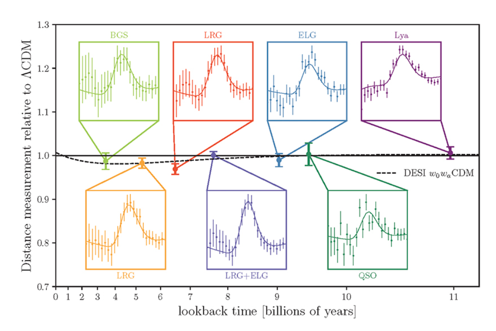
We can also infer the existence of dark energy using the late time integrated Sachs-Wolfe effect where photons get redshifted asymmetrically as they fall in and leave potential wells due to the exponential growth in the scale factor in the dark energy dominated era. This is a detail, but good to know it exists.
Define the power spectrum of density fluctuations in the universe. Draw the present-day power spectrum over the range of scales from 1 Mpc to several Gpc, and explain the various features. What is the theoretically expected primordial spectrum?
It is important to remember that the matter power spectrum is related to the 2-point correlation function (2PCF) simply by a Fourier transform. We’ll start with the 2PCF which is defined simply as
\[\xi(r) = \langle \delta(\mathbf{x}) \delta(\mathbf{x} + \mathbf{r}) \rangle_{\mathbf{x}, \mathbf{r}} \; ,\]This isn’t the most intuitive way to write the idea, but in essence, all we are doing is simply binning the distance between every combination of 2-points in our galaxy survey. If you like to think in terms of code, this is a double for-loop over \(N\) galaxies, when we bin we are averaging over all positions and orientations (angle brackets above). To visualize this, we show a gif from CAASTRO

We typically use galaxies to measure the 2PCF, but remember galaxies are a biased tracer. To understand what I mean, imagine you were a Martian alien studying Earth with a telescope. If you wanted to guess the population density of humans on Earth, you could wait till night time and you would see lights glowing around the globe corresponding to people’s homes. This is a lot like using galaxies as a biased tracer of dark matter, the galaxies are the lights and the population density of humans is the underlying dark matter (see below)
It’s quite obvious where the humans are based only on the lights. The relation between the galaxy overdensity field and the matter overdensity field is \(\delta_g \sim b \; \delta_m\) where \(b\) is some bias factor of order unity. On large scales its just a number, on small scales we have more complex non-linear bias but that’s a detail. From this we know that the correlation function (and thus the power spectrum) of galaxies should be related to the matter version by
\[\xi_{\rm gg} \sim \langle \delta_{\rm g} \delta_{\rm g} \rangle \sim \langle b \delta_{\rm m} b \delta_{\rm m} \rangle \sim b^2 \xi_{\rm mm} \; .\]One can get into the weeds of modeling how galaxies occupy dark matter halos with Halo Occupation Distributions (HODs) but that’s more of a detail for someone modeling these correlation functions to then fit for cosmology and galaxy properties.
Okay, so what does all this have to do with the matter power spectrum? Well, as we said earlier, it’s just a Fourier transform. If we assume isotropy, then the 2PCF and the power spectrum \(P(k)\) are related by
\[\langle \tilde{\delta}(\mathbf{k}) \tilde{\delta}^*(\mathbf{k}) \rangle_{\mathbf{\hat{k}}} \equiv (2 \pi)^3 P(k) \delta^D(\mathbf{k_1 - k_2})\]and if you don’t believe me that its a Fourier transform:
\[\xi(r) = \frac{1}{(2 \pi)^3} \int d^3 \mathbf{k} \; P(k) \; e^{-i \; \mathbf{k} \cdot \mathbf{r}} = \frac{1}{2\pi^2} \int dk \; k^2 \; P(k) j_0(kr) \; .\]Now that we understand the matter power spectrum is just the Fourier transform of the 2PCF, we can look at the matter power spectrum
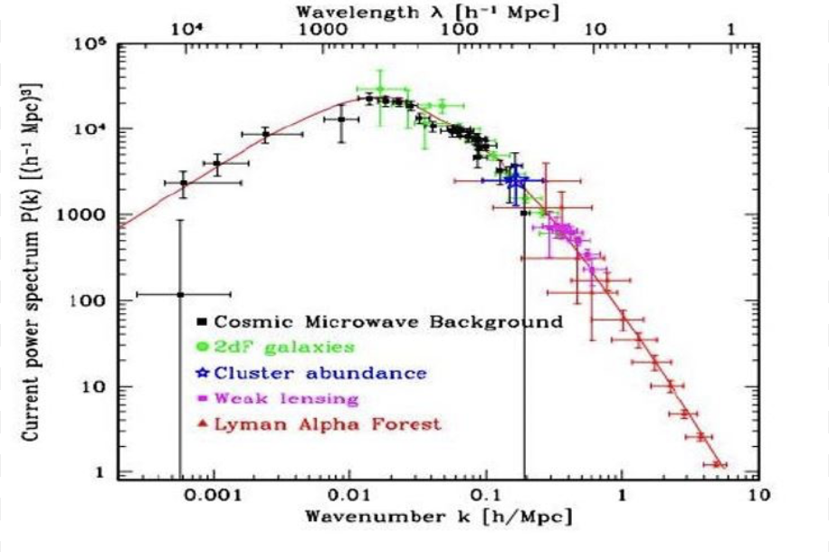 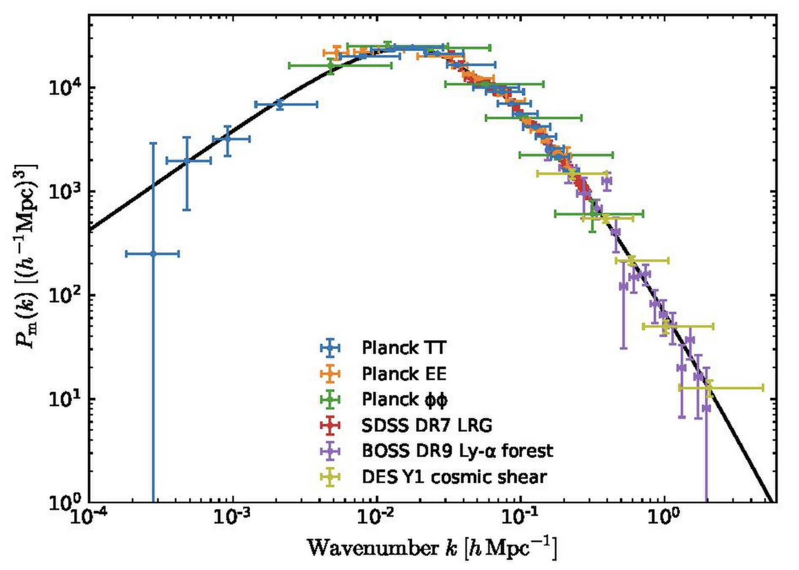
The left of the peak is the primordial matter power spectrum \(P(k) \propto k^{n_s}\), the turnover (peak) corresponds to the the horizon scale at the matter-radiation equality \(k_{\rm max} \sim 1/ r_{\rm hor}(z = z_{\rm eq, m-\gamma})\). It’s hard to see in these plots with data, but just to the right of the peak there is a sinusoid corresponding to the BAO bump in the 2PCF. If we approximate the BAO bump at \(r \sim 150 \; \rm Mpc\) as a delta function then its’ Fourier transform will correspond to a single sinusoid with frequency corresponding to that scale. These plots depict the linear matter power spectrum, the non-linear matter power spectrum has further suppression at small scales (large \(k\)) due to gravitational collapse + baryonic feedback.
Sketch the power spectrum of CMB anisotropies, and explain the key features. What is the approximate angular scale at which the power spectrum is maximized? What is the typical amplitude (in Kelvin) of the temperature perturbations on that scale?
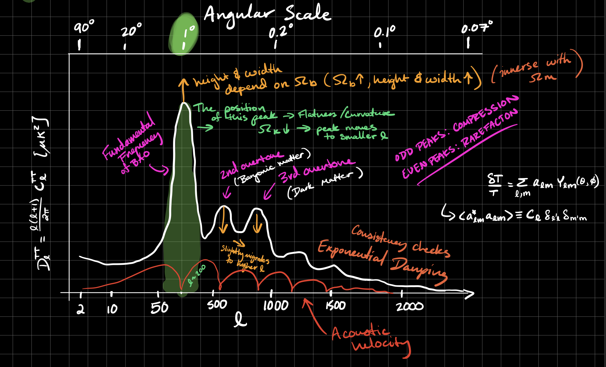 The temperature fluctuations are \(\delta T / T \sim 10^{-5}\), and the peak corresponds to \(\ell \sim 200\) (or ~ 1 degree).
It is important to understand just how important the first peak is for measuring the flatness of the universe. When we measure the power spectrum of the temperature fluctuations of the CMB, we are fundamentally just drawing the largest triangles possible in our universe and checking to see if those angles add up to 180 degrees, thats it.
The first peak corresponds to the fundamental frequency of the Baryon Acoustic Oscillations, aka the sound horizon at \(t_{\rm rec}\) denoted as \(r_{\rm s, H}\) which we know to be a fixed scale (\(r_{\rm s, H} \sim 150 \; \rm Mpc\)). This comes from just computing the distance a pressure wave traveling at the speed of sound \(c_s\) travels up until recombination, for more details on this check out Daniel Eisenstein’s blog post on the BAO, it is well written and helpful. Here is an animation of this process happening
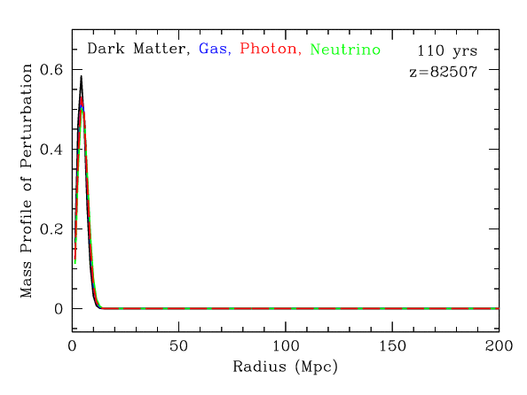
Once we know this fixed physical scale, the angular scale on the sky corresponding to the first peak in the CMB power spectrum should tell us the flatness of the universe, this diagram helps me to understand the set up
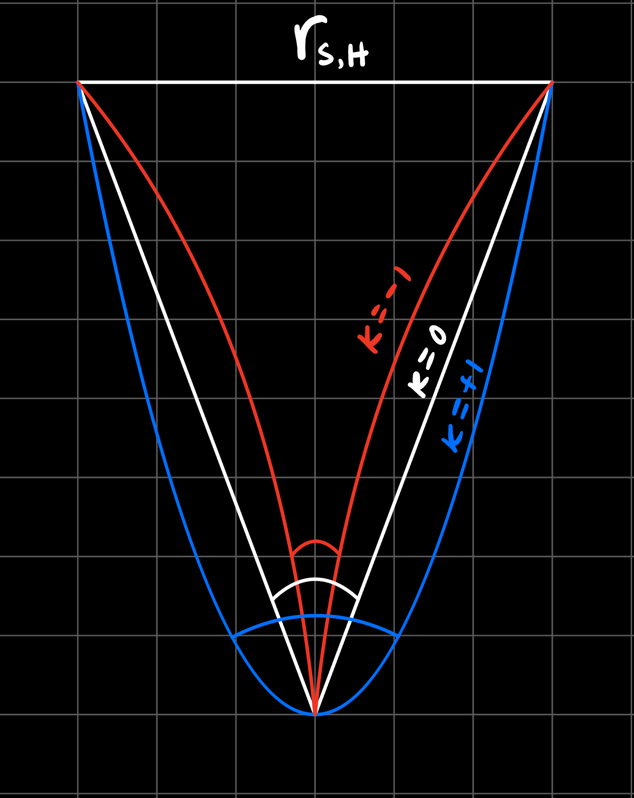
If the universe was not flat and instead positively curved then we would expect that \(\ell_{\rm peak} \downarrow\) and similarly if the universe was negatively curved then \(\ell_{\rm peak} \uparrow\). This provides a fantastic probe of flatness, which we find the universe to be extremely flat (indicating a potential problem needing inflation to solve).
A good exercise is to figure out how a biased high measurement of \(H_0\) impacts the predicted CMB power spectrum. For an interactive exploration of ΛCDM parameters on the CMB power spectrum, check out this redshiftzero webapp or see Prof. Wayne Hu’s Tutorials. Both of which were incredibly insightful. For polarization of the CMB I recommend checking this slide deck out.
For my own enjoyment, I’m gonna put some cool CMB visualization tools below along with a little more detail than needed. The CMB is well described by a Gaussian Random Field, which just means that it can be fully described by its 2PCF/Power Spectrum. When we plot the temperature anisotropy power spectrum, we plot as a function of multipoles \(\ell\) but what does that mean? Well the multipole \(\ell\) comes from the choice of basis functions (spherical harmonics \(Y_{\ell m}(\theta, \varphi)\)) we are linearly combining (with coefficients \(a_{\ell m}\)) to make the CMB, a visual of what I mean is below
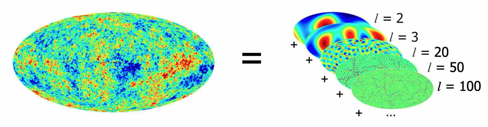
This is just like a Fourier series, just with a different choice of basis functions that allow us to describe a 2-sphere (a thin spherical shell)
\[f(x) = \sum_{n} \underbrace{a_n}_{\rm coeff.} \times \underbrace{e^{i n k x}}_{\rm basis \; func.} \;\;\;\;\; \longrightarrow \;\;\;\;\;\; \frac{\delta T}{T}(\theta, \varphi) = \sum_{\ell m} \underbrace{a_{\ell m}}_{\rm coeff.} \times \underbrace{Y_{\ell m}(\theta, \varphi)}_{\rm basis \; func.}\]in this case \(n\) and \(\ell\) play the same role (note the outer sum is over \(\ell\) and the inner sum is from \(m\) from \(-\ell\) to \(+\ell\), so once you do the inner sum \(\ell\) and \(n\) are basically the same). We can visualize each mode of the power spectrum on the plane of the sky (see below).
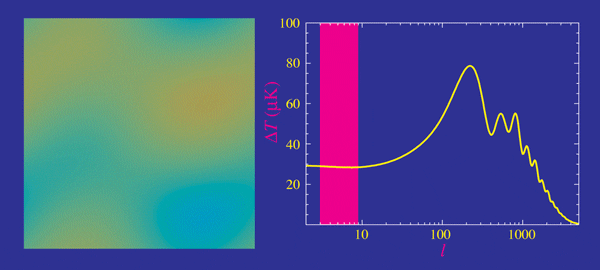
The plot of \(D_\ell^{TT} = \frac{\ell (\ell + 1)}{2\pi} C_{\ell}^{TT}\) (y-axis of CMB temperature power spectrum) relies on the \(C_\ell\) coefficients which are defined as
\[\langle a_{\ell m} a_{\ell m}^* \rangle \equiv C_{\ell} \delta_{\ell \ell'} \delta_{m m'}\]so the \(a_{\ell m}\) coefficients are directly related to \(C_\ell\), or in other words \(C_{\ell}\) tells you how much of the temperature anisotropy comes from a specific angular harmonic function (or multipole \(\ell\)). We can do this for the Temperature field and do an auto-correlation which is why we see the superscript \(TT\) in the y-axis label. One could do this for E-mode polarization or B-mode polarization and thus you would get \(EE\) or \(BB\) or you could even do a cross correlation \(TE\) for example, each acting as an additional dataset to fit the ΛCDM model to. In summary the CMB is rich with information which we plot below
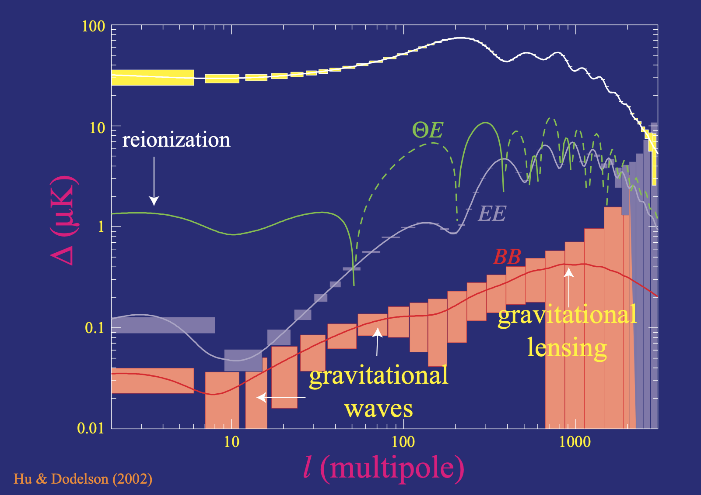
What is the epoch of reionization, and how can it be studied observationally?
The Epoch of Reionization corresponds to when the first stars started to turn on after recombination. The universe is entirely filled with neutral hydrogen and then once the first Population III stars turn on, we expect them to produce photoionizing radiation that will produce ionization bubbles around galaxies.
This process is expected to happen between \(20 < z < 6\), but it is not exactly known. Currently the best tool we have to study the EOR is with distant quasars and CMB B-mode polarization (CMB Lensing). The CMB Lensing measurements suggest that \(z_{\rm reionization} \sim 7-8\).
With distant quasars we can measure the Ly-α forest along different lines of sight which encodes information about the IGM. In the EOR most of the IGM is neutral hydrogen meaning instead of a Ly-α forest we get a Gunn-Peterson trough, this can all be used to study the EOR. Studies using this have found that there is a large neutral hydrogen fraction in the IGM at \(z \sim 7\) and it is known that around \(z \sim 6\) this epoch ends.
There is currently a large concerted effort in the 21-cm community to try and measure the global EOR signal with experiments like HERA or SKA. These have constraints on lower bounds but have yet to detect any signal.
What is gravitational lensing? What are strong lensing, weak lensing, and microlensing? What are some astrophysical applications of each type of gravitational lensing?
Gravitational lensing is the bending of light due to the warping of the fabric of spacetime due to massive objects. Fundamentally gravitational lensing can be described by 2 components: the divergence \(\kappa\) and the tangential shear \(\gamma_t\). I think of divergence as a field that describes how much the brightness increases due to the gravitational lensing and tangential shear as how much the lensed image of the source is stretched along a circular ring around the lens.
Below is a diagram of the setup for gravitational lensing in general
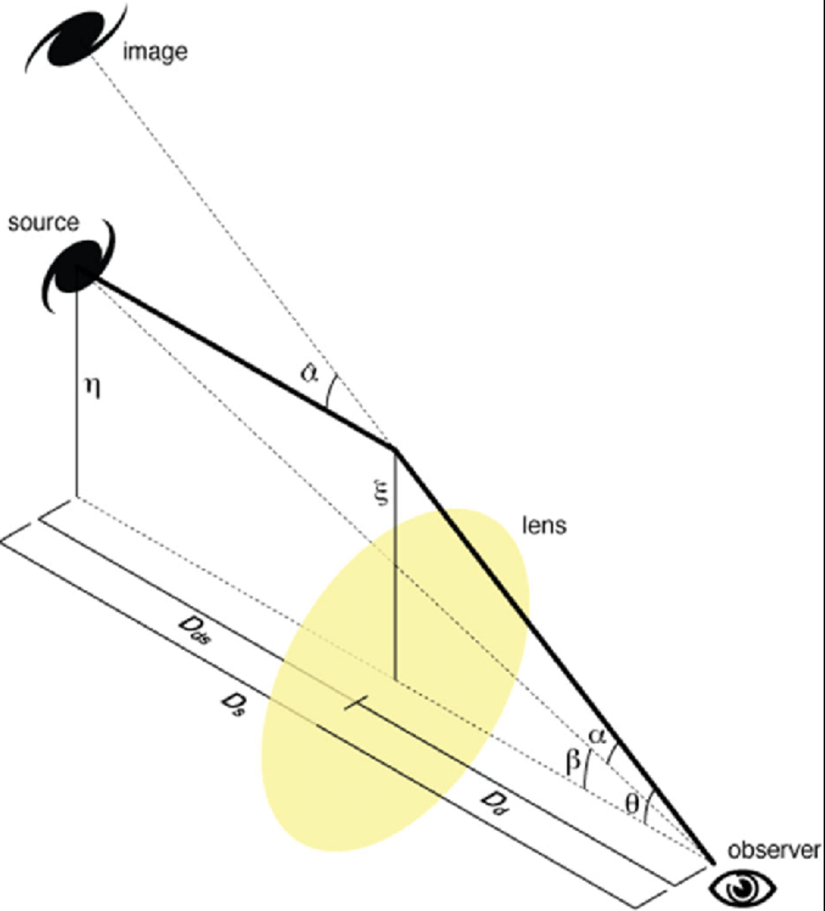
Strong Lensing: is the regime where the effect is strong enough that you get to see both divergence and tangential shear meaning you see the lensed image of the background source increase in brightness and get stretched.
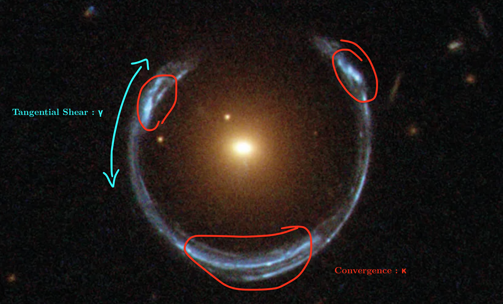
We typically see multiple lensed images in strong lensing where the convergence is maximized (note convergence κ is a field with minima and maxima, the maxima correspond to where the lensed image is the brightest, circled above). The image above is a chance alignment where we can see an Einstein ring for the lensed image. In strong lensing we can measure the lens mass and the density profile potentially. Strong lensing can magnify distant galaxies and quasars to become observable! We can use strong lensing to dissect merging halos (e.g. the bullet cluster). You can also measure \(H_0\) using time delay of lensed images if there is a SNe in the background galaxy!
Weak Lensing: is the regime of gravitational lensing where the signal is much much weaker (you can’t really see any stretching or increase in brightness on a per object basis). Instead we rely on projected 2PCFs of 100s of billions of galaxies to study this effect.
Instead of galaxy clustering where we correlated position-position to measure \(\xi_{\rm gg}(r)\) or \(P_{\rm gg}(k)\), we are interested in cross correlating tangential shears (deviations from expected elliptical shape) with positions in various combinations
Clustering \(w_p \propto \langle \delta_g \delta_g \rangle\) , projected 2PCF as we know it from before, this probes larger scales and is useful for BAO and large scale studies of the universe.
Galaxy-Galaxy Lensing \(\Delta \Sigma \propto \langle \delta_g \gamma_t \rangle\) , now we do a projected 2PCF where we correlate foreground galaxy positions with background galaxy tangential shears, this allows you to probe the mass density profile of your foreground. You can probe smaller scales than clustering, when
Cosmic Shear \(\xi_{\pm} \propto \langle \gamma_t \gamma_t \rangle\) , now we do a projected 2PCF where we correlate foreground tangential shears with background tangential shears, this is the hardest to understand but it can also probe the smallest scales into the highly non-linear regime where baryonic feedback and intrinsic alignments are major systematics that force us to remove ~ half of our data due to uncertainty on how to model it.
These are 3 separate 2PCFs, when combined they alleviate degeneracies plaguing individual measurements and a joint analysis of all 3 x 2pt correlation functions gives the tightest constraints on cosmological parameters like \(S_8 = \sigma_8 \sqrt{\Omega_{\rm m} / 0.3}\) for example. One can also do a 2x2pt analysis and get good constraints (say clustering + GGL for example).
A major challenge is getting the positions of these 100+ billion galaxies as is done in DES, KiDS, or HSC (and soon LSST) is measuring the redshift. This is far too many galaxies to measure spectra directly, so we need to use photometric redshifts. Commonly what is done is to use 4-8 photometric bands from the optical to the IR (u,g,r,i,z,y + j,h,k for example) to estimate photometric redshifts. It’s hard to trust any individual galaxy’s photo-z but we can make tomographic redshift bins and correlate them to do our lensing analysis and this is how you get those crazy plots from weak lensing cosmological analyses.
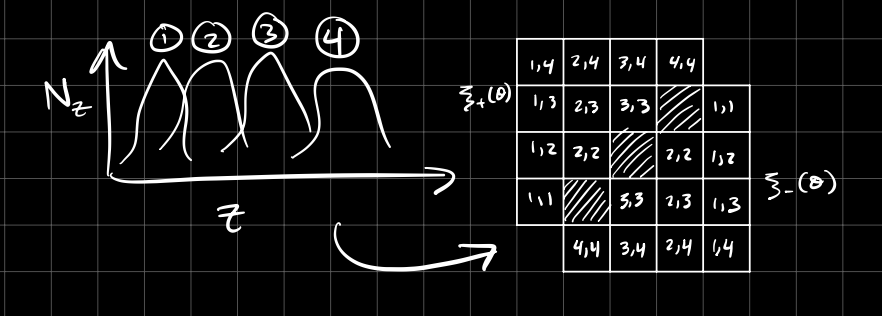
Currently there is a tension in \(S_8\) between CMB measurements and weak lensing measurements. Proposed explanations are non-linear in space, the most likely explanation is baryonic feedback being more extreme than anticipated or intrinsic alignments. Redder galaxies have stronger intrinsic alignments than blue galaxies (think about what galaxies are in galaxy clusters).
Microlensing: This effect is even smaller than weak lensing and focuses on just the convergence κ (aka magnification). As a compact massive object passes in front of background star or other luminous object we see a characteristic lightcurve

This can be used to study the properties of exoplanets (OGLE survey or Roman Telescope) and Neutron Stars or White Dwarfs.
What is the motivation for inflationary models of the very early universe, and how might such models be tested?
Horizon Problem: The CMB is incredibly homogenous and isotropic, how can that be true if one direction should be far away enough to be causally disconnected to the opposite direction?
The sound horizon distance at \(t_{\rm rec}\) corresponds to \(\theta \sim r_{\rm s,H} / d_A(z_{\rm rec}) \sim 2^{\rm o}\) which means that the CMB should only be causally connected \(\theta \lesssim 2^{\rm o}\) but its homogenous.
Flatness Problem: Why is the universe so flat? \(\Omega_{\rm k,0} \approx 0.003\). Predictions from slow-roll inflation say \(P(k) \propto k\) (we measure \(\propto k^{0.96}\)). We can test for inflation by constraining the tensor-to-scalar ratio from low multipole B-mode polarization CMB measurements or by measuring the local non-Gaussianity \(f_{\rm NL}\) with large galaxy surveys in the future. The amplitude of the Bispectrum is supposed to be sensitive to \(f_{\rm NL}\) and the amplitude of the Trispectrum is supposed to be sensitive to \(g_{\rm NL}\) in the CMB but the data is not good enough to constrain.
In what sense do galaxies fall into two distinct populations? In other words, what are the parameters of galaxies that show a bimodal distribution?
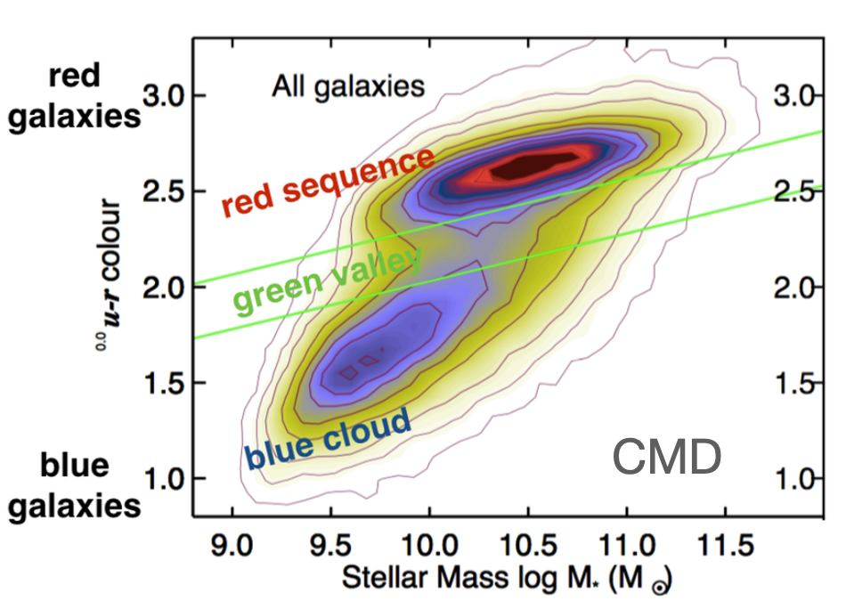
Galaxies in Blue Cloud:
young (high SFR)
spirals and bars
blue in color
less massive
lower Sersic Index \(n \lesssim 2\)
Galaxies in Red Sequence:
old (low SFR)
elliptical
red in color
more massive (and dispersion dominated)
“red and dead”
higher Sersic Index \(n \gtrsim 2\)
The red sequence is elongated due to the mass-metallicity relation
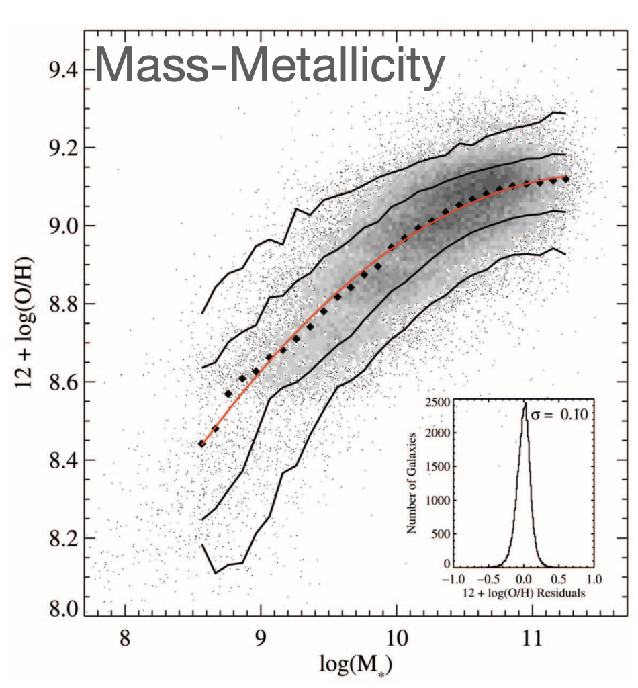
Sersic Profiles:
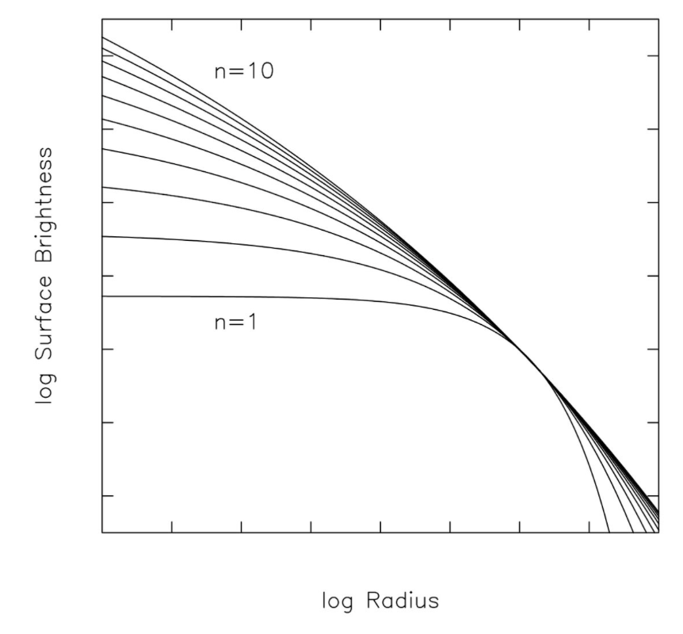
Draw the spectral energy distribution of a typical galaxy from the far-UV to the far-IR. Do this separately for an elliptical galaxy and a spiral galaxy. What sources dominate the UV? The optical and near-IR? The mid and far-IR?
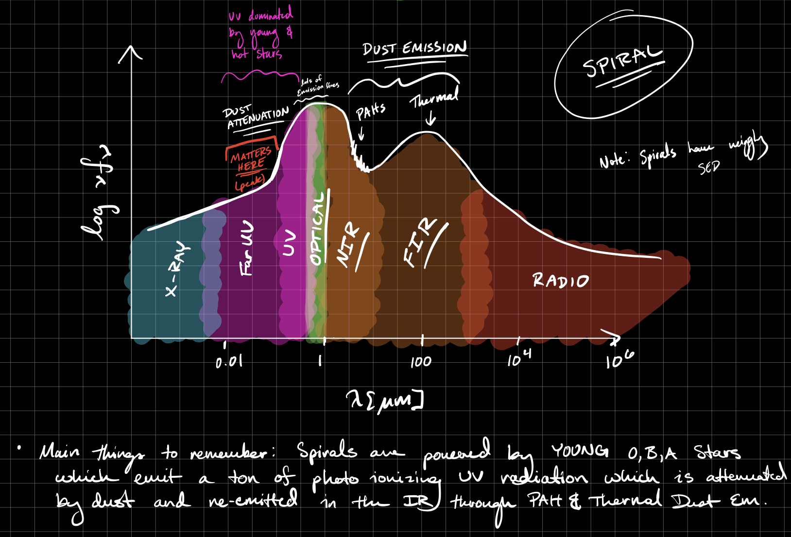
Spiral galaxies have emission lines in the optical, in particular we have Balmer lines and [OIII] which tell you about star formation.
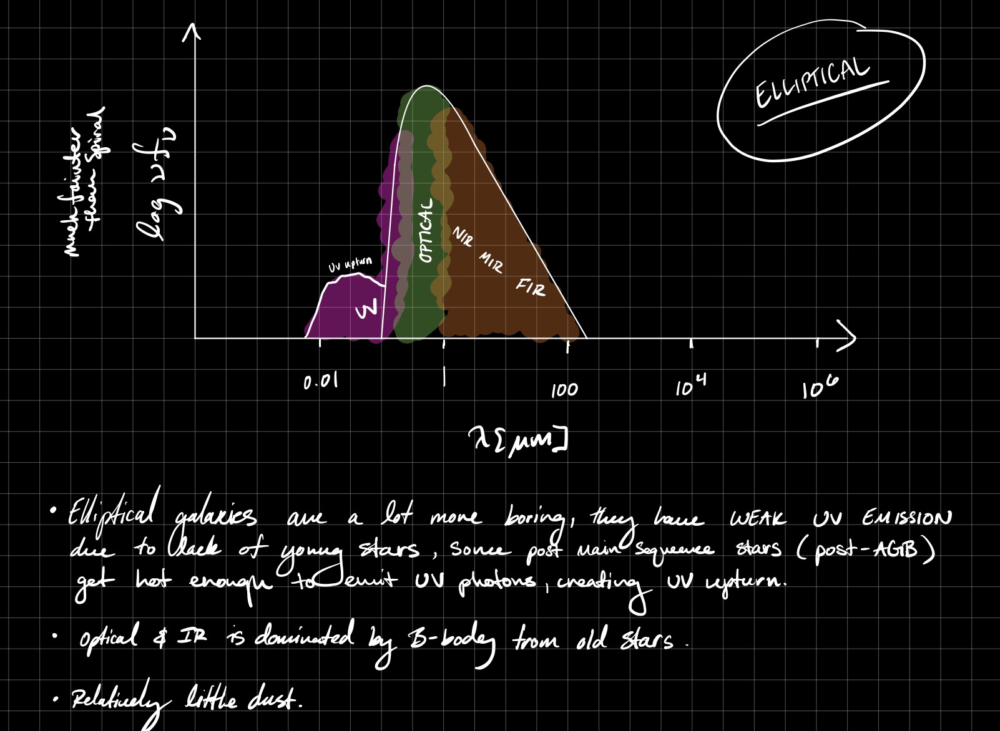
In the optical, the difference looks like 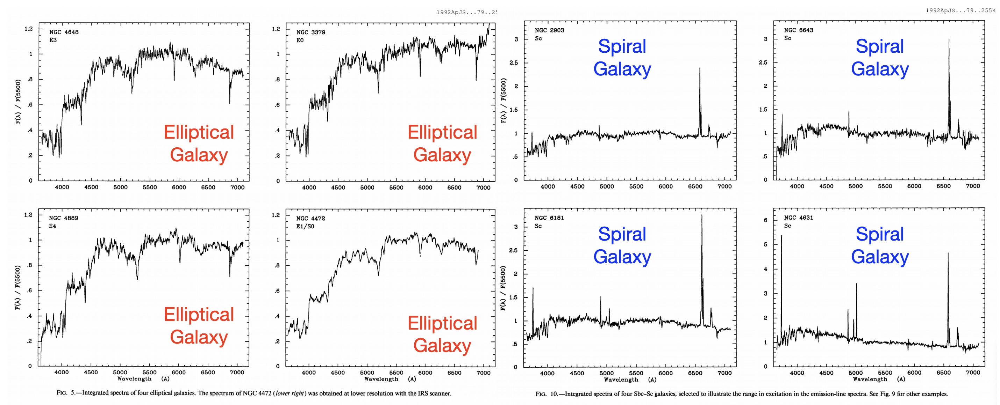
Specific absorption and emission lines are
SPIRAL GALAXY:
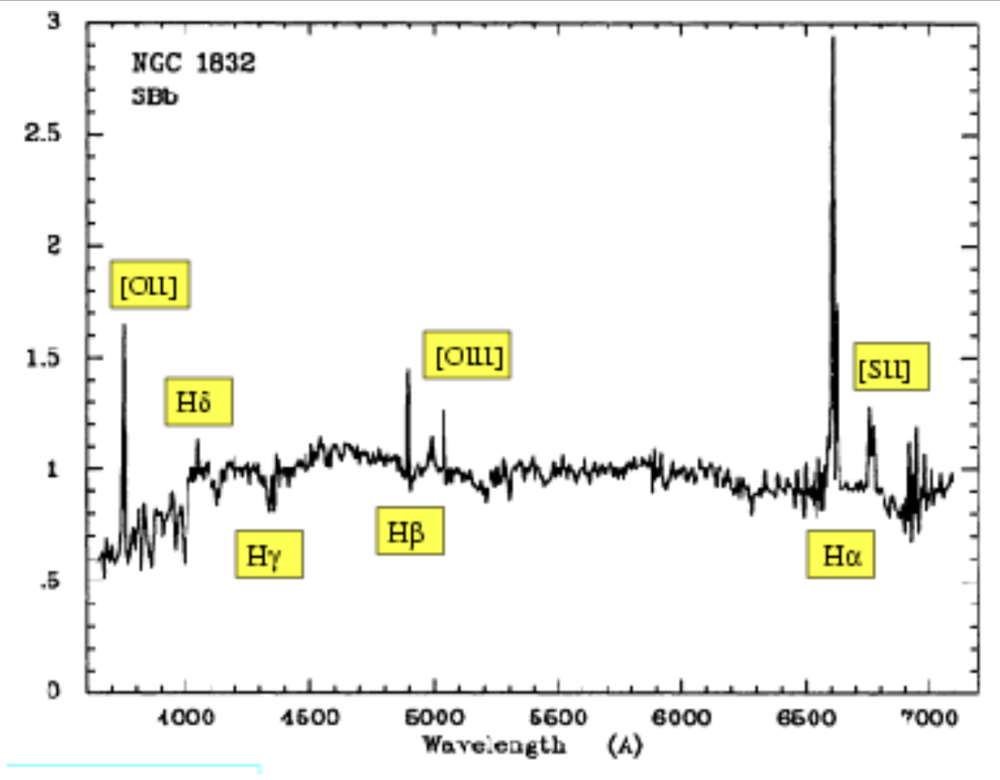
ELLIPTICAL:
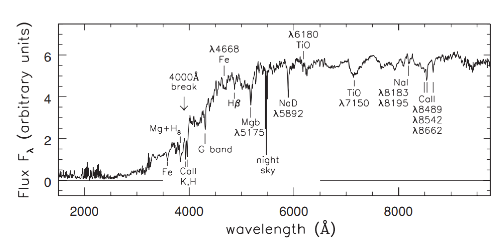
Describe the general idea of stellar population synthesis models of galaxies, and why it is important. What are the main sources of uncertainties in the results?
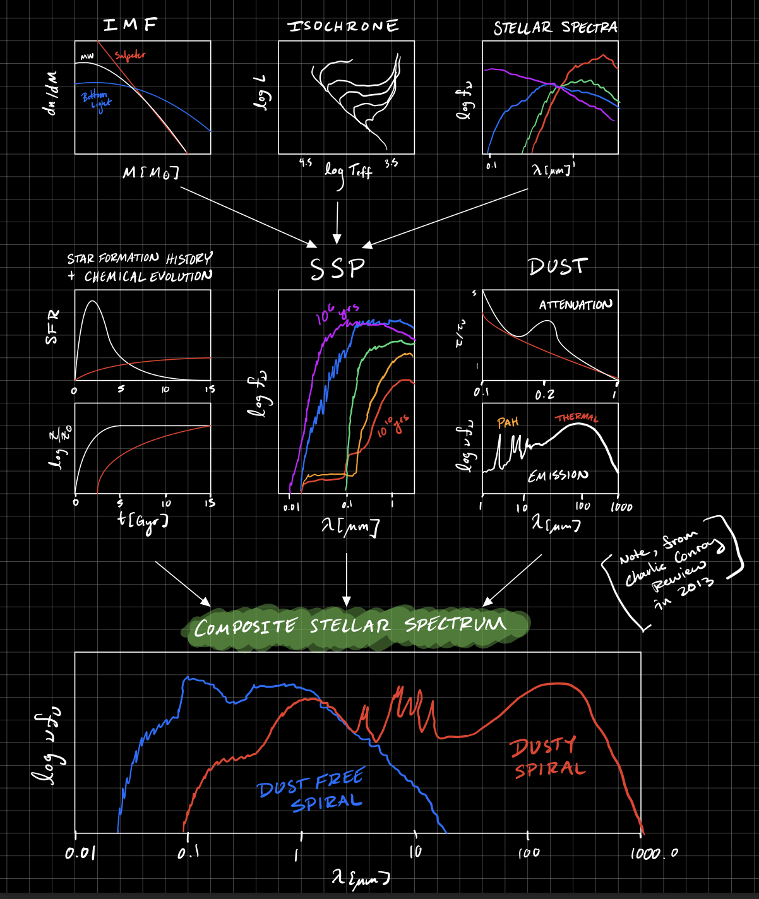
The main sources of uncertainty come from
I) IMF
II) SFH & Chemical Evolution (metallicity-age degeneracy)
III) Dust Extinction
By synthesizing stellar populations we can simulate the SED of a galaxy and fit to find out about the history and chemical evolution of a galaxy.
Which features of galaxy spectra are used to measure the star formation rate?
Indicators of star formation are:
Hα : O stars ionize H to make a Stromgen sphere -> recombine to make Hα (the best, and probes SFR on the timescale of ~10 Myr)
OII or OIII : lots of scatter and depends on metallicity
UV : Best for direct measurement of hot stars, very impacted by dust (Lyα)
IR : Dust absorbed by UV and re-emitted in Far IR
Radio : Thermal from HII regions & Synchrotron from SNe Remnants
X-ray : High mass x-ray binaries
Important figures to remember:
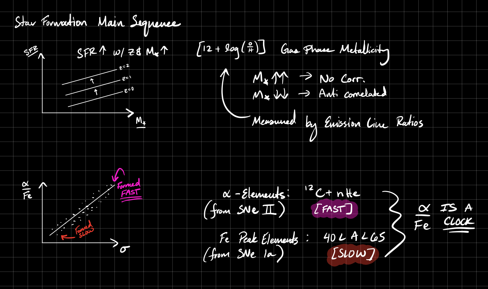
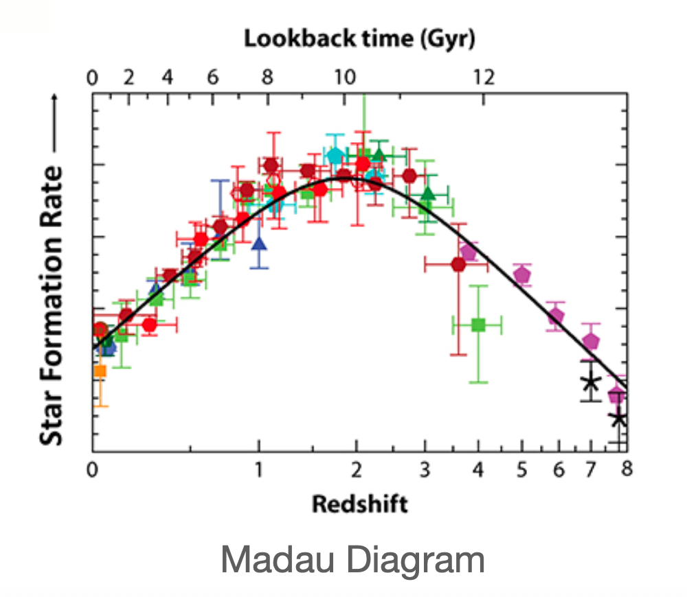
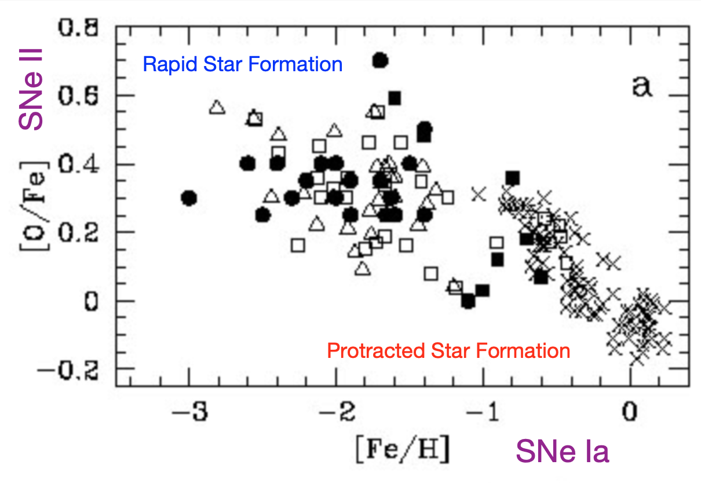
What are the Faber-Jackson relation, the Tully-Fisher relation, and the fundamental plane of elliptical galaxies? What are the possible reasons for these relationships?
These are all famous scaling relations found in galaxies
Tully-Fisher is for spiral galaxies : \(L \propto v^4\) (velocity of flat rotation curve)
Faber-Jackson is for elliptical galaxies : \(L \propto \sigma^4\) (velocity dispersion of stars)
Fundamental Plane is for elliptical galaxies : \(\log R = a \log \sigma + b \log \langle I \rangle + c\). We define \(R\) to be the radius, \(\langle I \rangle\) to be the intensity, and \(\sigma\) to be the velocity dispersion.
The fundamental plane is thought to just be a statement of the virial theorem.
\[\langle U \rangle + 2 \langle K \rangle = 0 \;\;\;\; \longrightarrow \;\;\;\; \sigma^2 \sim \frac{GM}{R} \; ,\]if we assume the M-L ratio in a galaxy to be ~constant, then we can say \(M \sim (\frac{M}{L})L\) and \(L = 2\pi \langle I \rangle R^2\) so \(M \sim (\frac{M}{L}) \langle I\rangle R^2\). Plugging all this in and solving for \(R\) we get
\[R \sim \frac{\sigma^2}{\langle I \rangle} \frac{C}{G} \left( \frac{M}{L} \right)^{-1} \; .\]Which gives a value of \(a = 2\) and \(b = -1\) from the virial theorem. What we measure is a bit off from this prediction, a major contributor to this is that the M-L ratio is not necessarily constant in ellipticals which can induce a tilt in the fundamental plane.
Sketch the observed stellar-mass function of galaxies. Also sketch the mass function of dark matter halos that form in cold-dark-matter simulations. Do they have the same shape? Why or why not?
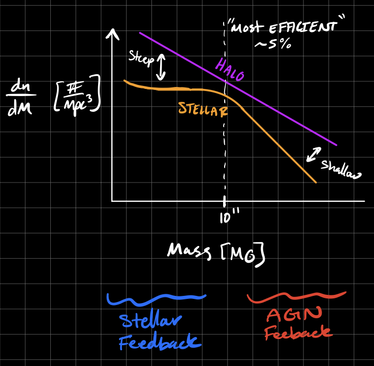
These curves follow a Schecter function which is just a power law with an exponential cutoff, this is also used for the luminosity function (but the same applies to \(n(M)\) as well
\[\phi(L) dL = \left( \frac{L}{L_*} \right)^{\alpha} \exp(-L/L_*)\]where \(L_*\) is the turnoff luminosity (or turnoff mass for \(n(M)\)). Star formation is maximized at \(M \sim M_* \sim 10^{10} \rm M_\odot\). This is because we strike a balance in baryonic feedback at this mass, more massive galaxies have stronger AGN feedback and less massive galaxies have strong stellar feedback relative to their total matter composition. The peak star formation efficiency is \(\sim 5 \%\) corresponding to Milky Way like galaxies. The power law slope and turnoff is different between the stellar mass function and the dark matter mass function because CDM is collisionless while baryons are collisional and SFR changes with baryonic feedback. The turn off mass for the dark matter halo mass function is much higher than the stellar mass.
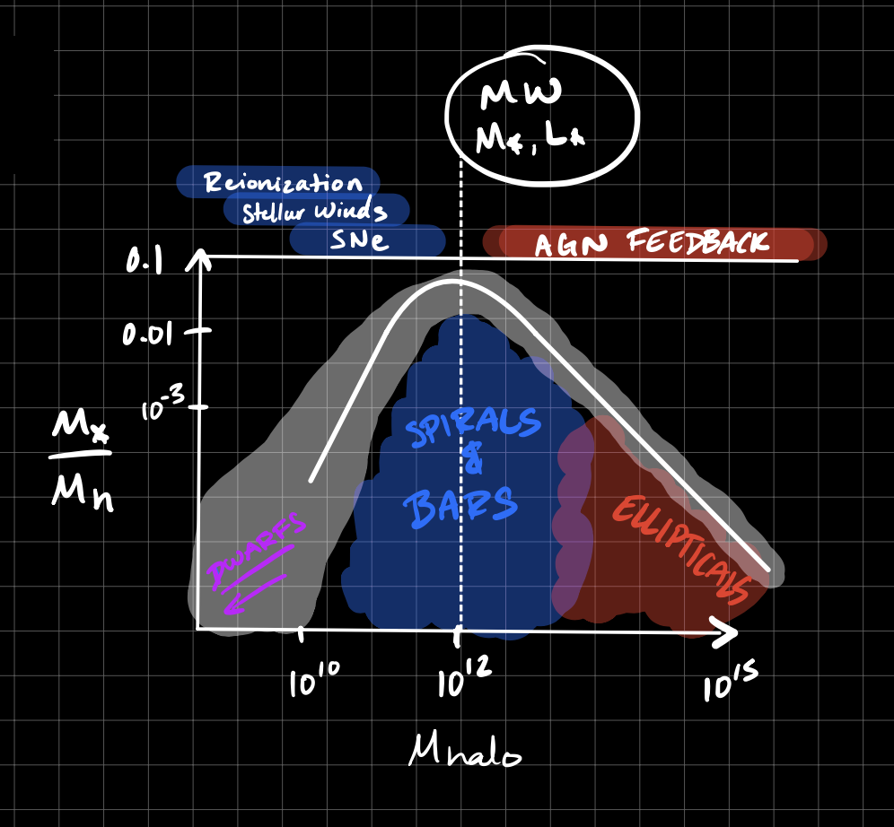
A nice plot from a review is given below to give validity to my sketch.
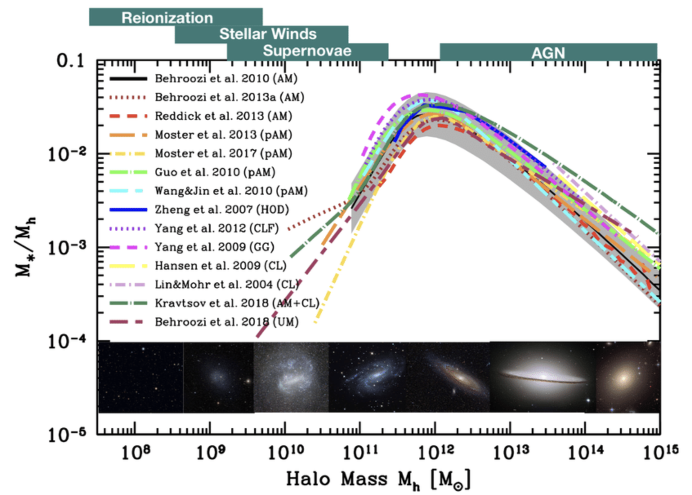
Describe three ways to determine the mass of a cluster of galaxies, and discuss their underlying assumptions.
I) Gravitational Lensing: Requires the galaxy cluster to be in the foreground. Assumes GR, which is a fine assumption. Requires redshifts of foreground and background galaxy. This is probably the most direct mass measurement. Assumes mass distribution for a DM halo (NFW profile for example.)
II) X-ray Emission of Gas: Assuming hydrostatic equilibrium of the Intracluster Medium (ICM), we can measure Bremsstrahlung emission of the hot ICM gas (\(T \sim 10^7 \; \rm K\)). Roughly ~10% of the mass is in the ICM gas. With hydrostatic equilibrium, if we assume \(\rho(r)\) for the gas, we can get the mass of the halo.
III) Velocity Dispersion: Dynamical estimate from \(\sigma_v\) of all the galaxies in the cluster using virial theorem \(M \sim R \sigma^2 / G\). This assumes virialization.
Describe the most widely used methods to measure the masses of black holes at the centers of galaxies, and discuss their pros and cons.
In order from easiest to hardest we have
I) using an empirical mass relationship: we can use the M-σ relation (\(M_{\rm bh} \propto \sigma_v^4\)). This is a non-ideal measure as it depends on an empirical relation, but it is relatively simple to measure.
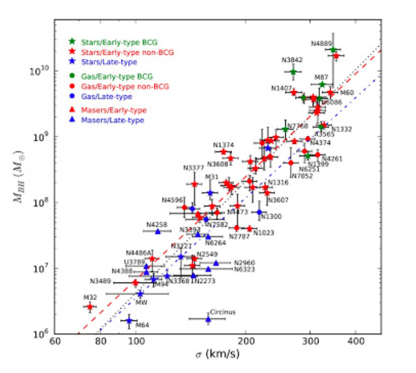
II) AGN spectral features: Broad lines (Hα coming from accretion disk). Also, X-ray emission from the inner accretion disk can also be used to probe SMBH mass
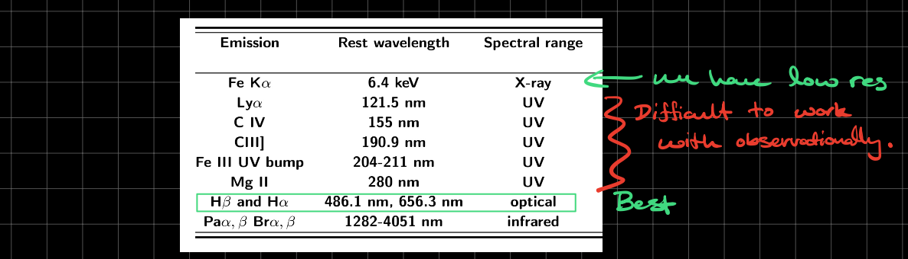
Assuming the accretion disk is ~circular we would expect
\[M_{\rm BH} \sim \frac{v_{\rm gas}^2 R_{\rm BLR}}{G}\]where BLR stands for the Broad Line Region. What is \(R_{\rm BLR}\)? Well there are R-L relationships that have been calibrated using x-ray reverberation mapping \(R_{\rm BLR} \sim c \Delta t\) where \(\Delta t\) is the time delay between broad line and continuum flux variability. In short, the luminosity of a broad line can give you a radius or we can use x-ray reverberation mapping to determine a radius and back out a mass. We can also use x-ray and radio emission from jets to back out a mass.
III) Dynamical Mass Estimates: estimates from local stellar orbits can be used to determine the mass and maximum size of a SMBH. This was done for Sgr A* at the center of our galaxy (see the dynamics document).
IV) Direct Imaging with EHT: to measure \(R_{\rm sch}\) which will give you the mass of the black hole, one can also constraint the spin of the black hole.
What is the evidence that quasars are powered by accretion of mass onto supermassive black holes?
We have 3 distinctive pieces of evidence for this theory:
I) Luminosity: the typical luminosity of a quasar is \(L_{\rm QSO} \sim 10^{12} \; \rm L_\odot\). This is so luminous that it can only be explained by accretion because accretion is the most efficient conversion of rest mass energy to radiation (~10% efficient)! For reference, fusion in stars is ~0.7% efficient!
II) Variability: on \(\Delta t \sim \; \rm days\), which suggests a compact emission region \(R \lesssim c \Delta t\). This can give us an inferred size that is consistent with an accretion disk around a SMBH.
III) Spectral Features: Broad line features which can be only from accretion disk in a deep potential well. Some quasars are radio-loud, which is consistent with synchrotron emission from relativistic jets launched by the SMBH.
We describe AGN and quasars with the Dusty Taurus Model, below is a schematic
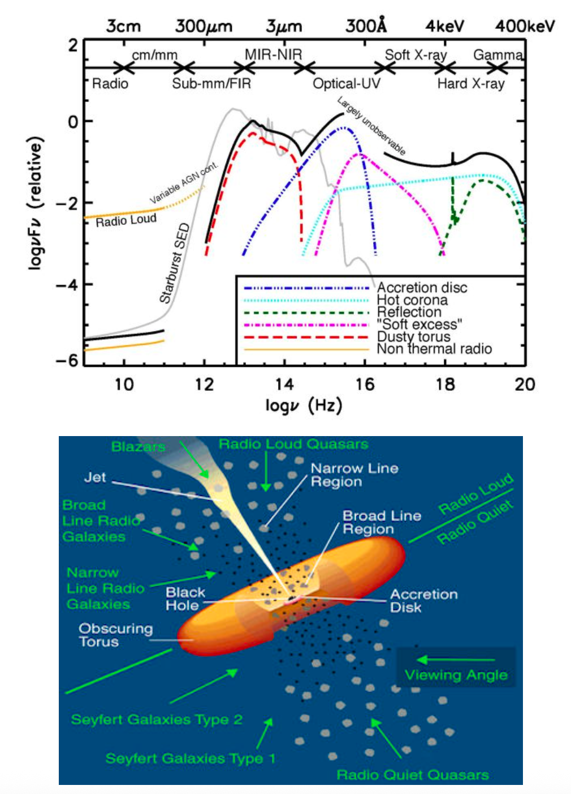
Below is a composite quasar spectrum combining 10s of thousands of quasar spectra in SDSS.
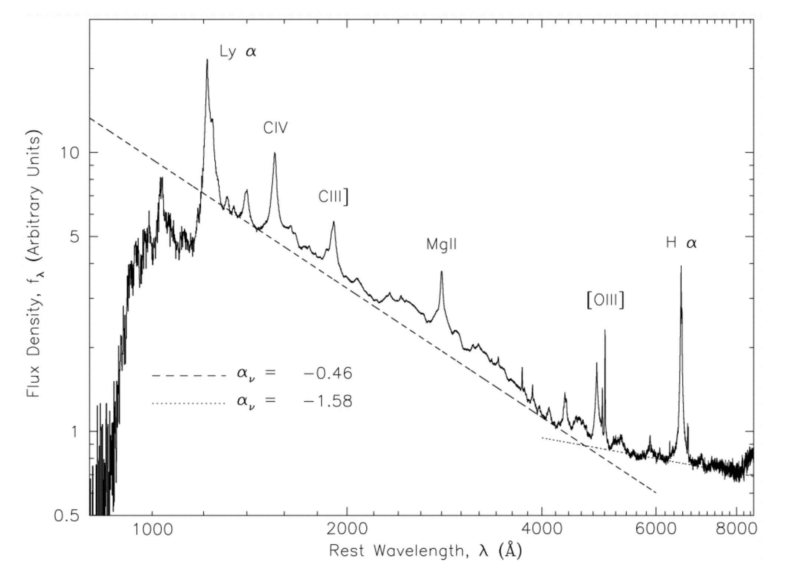
We can also see how these spectral features change with redshift in SDSS
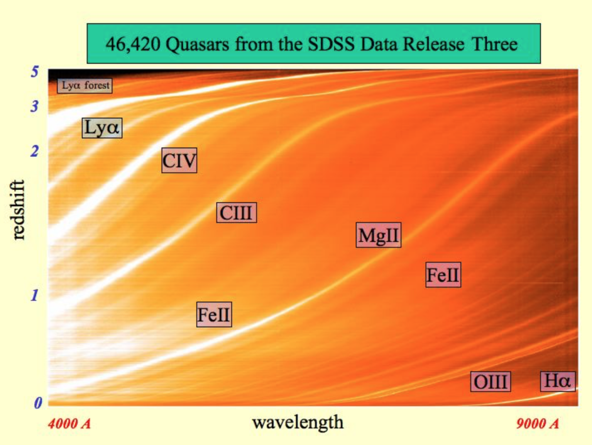
What is the Lyman-α forest and why is it interesting?
The Lyman-α forest refers to the series of absorption lines found leftward of the Lyα line that arise as a light from a distant galaxy travels through the intergalactic medium (IGM).
Specifically, since Lyα is a resonant line, whenever there is neutral hydrogen that the light has to pass through, the neutral hydrogen will absorb that photon. As space expands and the light redshifts this happens over and over again creating a forest of absorption lines.

This can also happen for all Lyman series lines, but Lyα is the most prominent.
This is interesting because we can learn about the composition of the IGM as a function of redshift along many lines of sight. We can also do cosmology with quasars in the Lyα forest through quasar clustering which yield high redshift (\(z \sim 2-6\)) constraints on the matter power spectrum at quasi-linear scales and the BAO at those redshifts. If the quasar is distant enough \(z \gtrsim 6\) then it will emit it’s light during the epoch of reionization, a time where there is a lot of neutral hydrogen in the IGM which means that we are bound to have such a prominent Lyα forest that we will see a Gunn-Peterson Trough (basically all light leftward of Lyα is absorbed!). The GP trough is useful for constraining the end of the epoch of reionization! We think the EOR ends around \(z \sim 6-8\).
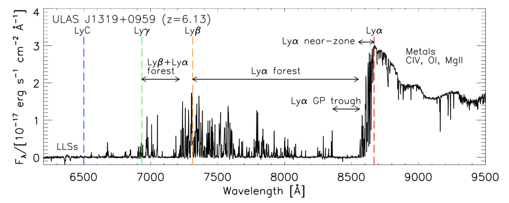